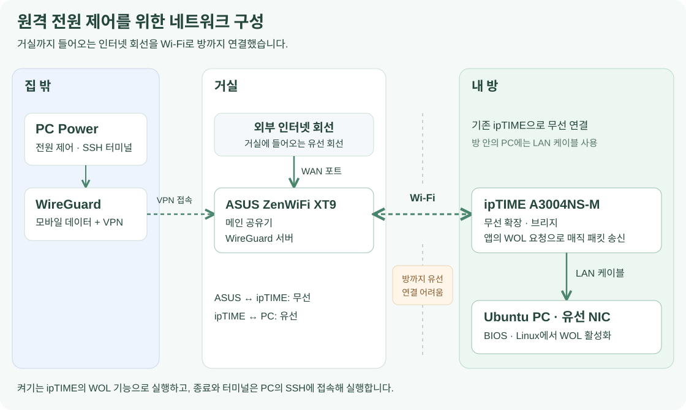
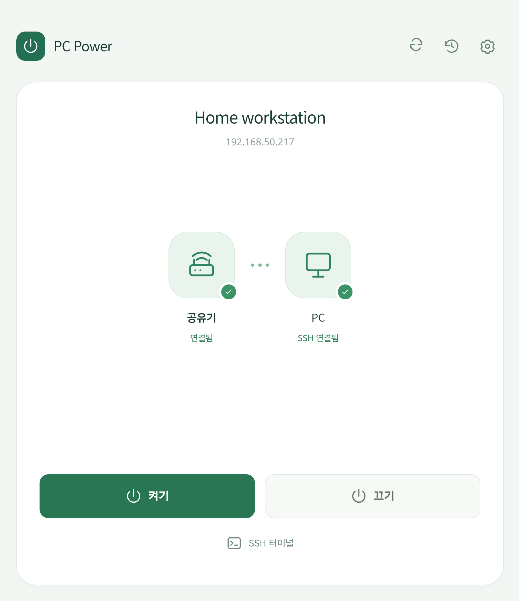
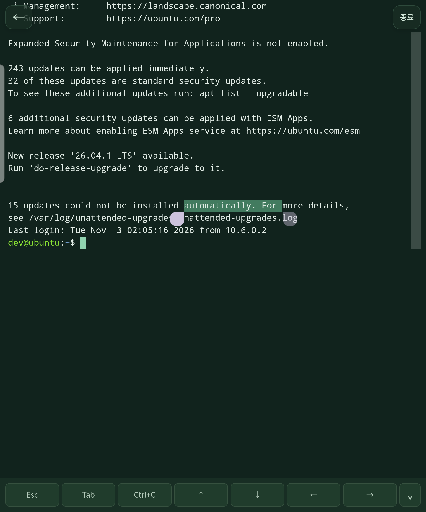

프로젝트 소개
집 밖에서도 필요할 때 데스크탑을 켜고, 작업이 끝나면 끄고 싶었습니다. 거실에는 인터넷 회선과 ASUS 공유기가 있었지만, PC가 있는 방까지 LAN 케이블을 연결하기는 어려웠습니다. 사용하지 않던 ipTIME 공유기를 무선 브리지로 연결하고, BIOS·Ubuntu의 WOL과 WireGuard VPN을 설정해 원격으로 PC를 제어할 환경을 구성했습니다.
집 Wi-Fi에서는 켜지던 PC가 VPN에서는 켜지지 않아, 공유기의 응답 경로와 매직 패킷 전달 방식을 조사했습니다. ipTIME의 기본 게이트웨이를 설정해 VPN에서 관리 화면에 접속할 수 있게 했고, PC 켜기는 공유기의 WOL 기능을 호출하는 방식으로 해결했습니다.
매번 공유기 관리 화면에 들어가는 불편을 줄이려고 AI 코딩 도구를 활용해 PC Power 앱을 개발했습니다. 전원 제어와 SSH 터미널 기능을 정하고, Galaxy Z Fold5에서 직접 사용하며 화면과 동작의 수정 방향을 잡았습니다. 앱은 Android와 macOS에서 사용할 수 있습니다.

기존 공유기를 활용한 네트워크 구성
처음에는 ASUS AiMesh를 지원하는 공유기를 추가로 구매하려고 했습니다. 메인 공유기와 PC가 떨어져 있어, PC 옆에 놓을 공유기를 무선으로 연결하고 그 공유기에서 LAN 케이블을 뽑는 구성을 생각했습니다.
그러다 기존 ipTIME에도 다른 공유기의 Wi-Fi에 접속해 유선 장비를 연결하는 무선 확장 기능이 있다는 것을 알게 됐습니다. 집에 남아 있던 공유기를 사용하면 새 장비를 사지 않고도 PC의 유선 NIC까지 연결할 수 있었습니다. 이 구성은 ASUS AiMesh에 ipTIME을 등록한 것이 아니라, ipTIME을 무선 확장용 브리지로 사용한 것입니다.
PC는 기존 Wi-Fi 연결을 유지하고, WOL을 받을 유선 NIC를 ipTIME의 LAN 포트에 연결했습니다.
BIOS와 Ubuntu의 WOL 설정
메인보드 BIOS에서 LAN·PCIe 장치가 시스템을 깨울 수 있도록 설정했습니다. 이어 Ubuntu에서 Realtek 유선 NIC의 WOL 상태를 확인했는데, 매직 패킷 수신을 지원하지만 실제 설정은 비활성화돼 있었습니다.
BIOS의 깨우기 허용과 운영체제의 NIC 설정을 모두 적용해야 했습니다. ethtool로 현재 장치에 매직 패킷 깨우기를 적용하고, NetworkManager의 유선 연결 프로필에도 저장해 재부팅이나 연결 재활성화 후에 설정이 적용되도록 했습니다.
실제 설정값과 명령어는 네트워크와 WOL 설정에서 확인할 수 있습니다.
VPN에서 PC가 켜지지 않는 문제
집 Wi-Fi에서는 PC가 켜졌지만, 휴대폰의 Wi-Fi를 끄고 모바일 데이터와 WireGuard를 사용하면 동작하지 않았습니다. 이 과정에서 서로 다른 두 문제를 해결했습니다.
먼저 ipTIME 관리 화면 자체가 VPN에서 열리지 않았습니다. ipTIME은 PC의 프레임을 전달하는 브리지이면서, 자신의 관리 웹 서버를 실행하는 장비이기도 합니다. 관리 화면의 응답을 VPN 휴대폰으로 돌려보내려면 ipTIME 자신의 기본 게이트웨이가 필요했습니다. 허브/AP 모드의 내부 게이트웨이를 ASUS로 지정해 관리 화면의 응답 경로를 만들었습니다.
그다음에는 관리 화면과 SSH에 접속할 수 있는데도 앱의 WOL이 실패했습니다. 일반 IP 주소로 접속되는 것과 LAN 브로드캐스트가 전달되는 것은 달랐습니다. 같은 송신 코드로 비교했을 때 VPN을 통한 유니캐스트는 집의 수신기에 도착했지만, 브로드캐스트는 도착하지 않았습니다.
유선 NIC에 고정 IP를 예약하고 ASUS의 ARP 항목을 고정하는 방법도 시도했습니다. 이 설정으로도 PC는 켜지지 않았지만, ASUS에서 직접 매직 패킷을 보내면 켜졌습니다. 이 결과를 보고 앱에서 공유기의 WOL 기능을 호출하는 방식으로 변경했습니다.
ipTIME WOL 기능 연동
공유기에 접속해 PC를 켜는 과정을 앱의 버튼 하나로 실행하고 싶었습니다. 이 요구사항을 바탕으로 AI 코딩 도구를 활용해, ipTIME 로그인과 공유기 관리 화면의 WOL 요청을 처리하는 기능을 구현했습니다. 외부 앱의 요청은 VPN을 통한 IP 통신으로 전달하고, PC를 깨우는 매직 패킷은 PC와 LAN으로 연결된 ipTIME에서 생성합니다.
공유기 웹 화면을 매번 여는 대신, 앱에서 켜기를 누르면 로그인 세션과 등록된 대상 MAC을 확인하고 WOL 요청을 보냅니다. 보안문자가 필요한 경우에는 공유기가 제공한 이미지를 앱에 표시하고 사용자가 직접 입력합니다.
홈 화면에는 공유기 접속 상태와 PC의 SSH 응답 여부를 각각 표시했습니다. 켜기 요청 후에는 SSH 응답을 기다려 PC에 접속할 수 있는 상태인지 확인합니다. UDP 매직 패킷을 직접 보내는 방식도 남겨 두어 브로드캐스트나 특정 IP를 선택할 수 있습니다.

홈 화면에서 PC를 켜거나 끄고 SSH 터미널을 열 수 있습니다.
전원 제어와 SSH 터미널
PC 종료
WOL은 PC를 깨우는 기능이므로 종료는 SSH로 구현했습니다. PC에 로그인한 뒤 sudo로 정상 종료 명령을 실행합니다. 필요한 비밀번호는 앱에서 입력·저장할 수 있으며, 비밀번호가 틀리거나 권한이 부족하면 종료 창에 오류를 표시합니다. 오류가 나면 창을 유지해 비밀번호를 수정하고 다시 시도할 수 있게 했습니다.
SSH 터미널
전원을 켠 뒤 별도 SSH 앱을 열지 않아도 작업할 수 있도록 터미널을 추가했습니다. xterm.js가 화면을 표시하고 Rust의 SSH 연결이 실제 입력과 출력을 전달합니다. PTY 세션을 연결해 셸과 편집기 같은 대화형 프로그램도 사용할 수 있습니다.

터미널은 폴드를 펼쳐도 팝업으로 제한하지 않고 화면 전체를 사용합니다. 키보드가 올라오면 터미널 높이를 줄이고, Esc·Tab·Ctrl+C·방향키는 같은 줄에 배치해 필요할 때 접을 수 있도록 했습니다. Android 기본 텍스트 선택·복사·공유를 사용하고, 선택한 내용을 설치된 ChatGPT 앱으로 전달하는 메뉴도 연결했습니다.
뒤로가기는 터미널 화면을 닫고, 종료 버튼은 SSH 연결을 끊도록 구분했습니다. 앱 안에서 다른 화면으로 이동했다 돌아와도 기존 연결을 유지해 다시 로그인하는 과정을 줄였습니다.
VPN 연결과 인증 정보 저장
VPN은 별도의 WireGuard 앱에서 연결한 뒤 PC Power를 사용하는 방식으로 정했습니다. PC Power를 닫아도 VPN 연결은 WireGuard 앱에서 유지하거나 종료할 수 있습니다.
SSH 개인키와 비밀번호, 공유기 로그인 정보는 Android Keystore와 macOS Keychain을 사용해 보관합니다. 화면 설정과 인증 정보를 구분하고, SSH 서버의 호스트 키 지문도 대조합니다.
앱의 통신 구조와 인증 정보 저장 방식은 앱 내부 동작에서 확인할 수 있습니다.
작업 범위와 개발 방식
네트워크 구성에서는 기존 공유기의 무선 브리지 설정, BIOS·Ubuntu의 WOL 설정, VPN 접속 문제 해결을 진행했습니다. DHCP 예약과 정적 ARP를 시도하고 공유기에서 매직 패킷을 직접 보내 보면서, IP로 접속되는 것과 꺼진 PC에 WOL 패킷이 전달되는 것이 어떻게 다른지 살펴봤습니다.
앱의 코드 작성과 수정에는 AI 코딩 도구를 활용했습니다. 저는 필요한 기능과 사용 방식을 정하고, 실제 기기에서 발생한 문제를 재현해 수정할 내용을 전달했습니다. Fold5에서 키보드가 터미널을 가리는 문제, 텍스트 선택과 복사, 화면을 접고 펼칠 때의 배치, 종료 실패 시 오류 표시 등을 반복해서 테스트했습니다.
기술 스택은 Tauri 2·React·TypeScript·Rust입니다. React가 화면을 표시하고 앱 내부의 Rust 코드가 공유기 요청과 SSH 통신을 처리합니다. 별도의 앱 백엔드 서버를 운영할 필요는 없습니다.